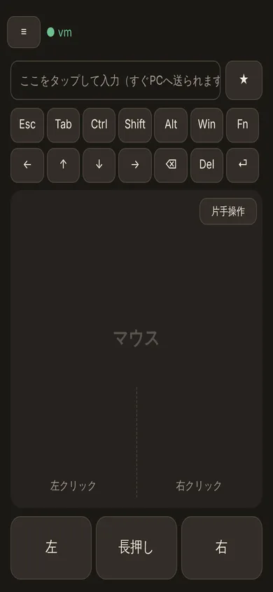
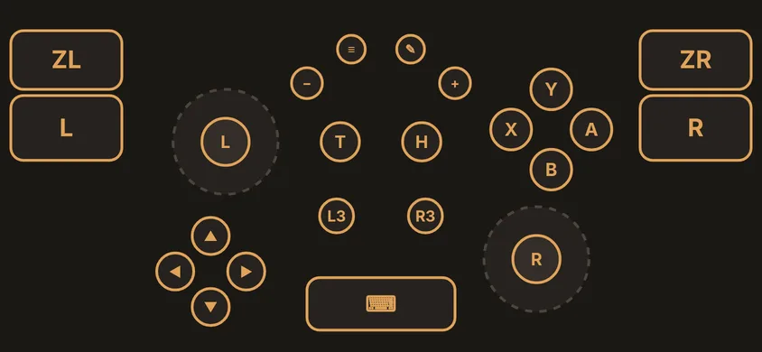
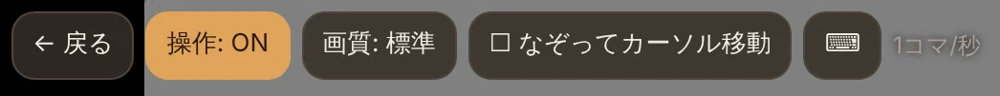
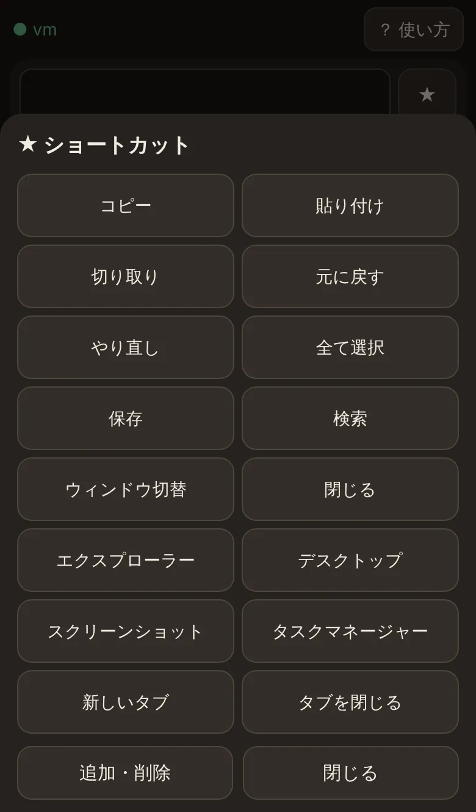

PhonePad の使い方
画面ごとの使い方と、指の動かし方をまとめました。写真はブラウザ版（iPhone）のものです。Android のアプリ版も、操作の方法は同じです（ボタンの置き場所の違いはこちら）。
はじめに
スマホとPCを同じWi-Fiにつないでおきます。
- PCで PhonePad.exe を起動すると、PhonePad の画面が開きます（画面を閉じても、タスクバー右下のアイコンで動き続けます）。
- Android: PhonePad アプリを開いて「QRコードで接続」を押し、PCの画面の大きいQRコードを読み取ります。
iPhone: カメラで「iPhone・ブラウザで使う」のQRコードを読み取り、黄色い「Safari で開く」を押します。 - 2回目からは、開くだけで自動でつながります。iPhone は Safari の共有ボタン →「ホーム画面に追加」しておくと便利です。
キーボードとマウス
開いたときの画面です。上が文字入力、下の大きな面がマウス（トラックパッド）です。

文字を打つ
入力欄をタップして打つと、その場でPCに入ります。日本語は変換して確定したときに送られます。打っている間は、入力欄と特殊キーがスマホのキーボードのすぐ上に並び、PCで入力中の欄の中身も出ます（触れた位置にPCのカーソルを動かせます）。スマホのキーボードを閉じると、元の配置に戻ります。
- Ctrl・Shift・Alt・Win
- 1回押す → 次の1キーだけ。2回押す → 押しっぱなし。もう1回で解除。
例: Ctrl を押してから c で「コピー」 - Fn
- F1〜F12、Home、End、半角/全角 などが出ます
- ← ↑ ↓ →・⌫
- 長押しで連続入力。速さは設定で変えられます
マウスの指の動き
下の「左」「右」は押している間ボタンを押したままになります。「長押し」を押しながら面をなぞるとスクロール、何もせず離すと中クリックです。
片手で使う（片手操作）
マウスの面の右上にある「片手操作」を押すと、1本指だけで全部できる画面になります。なぞる=カーソル移動、タップ=左クリックで、スクロール（▲▼、押し続けると連続）・右クリック・つかむ（ドラッグ）は横に並んだボタンで行います。「つかむ」を押すと左ボタンを押したままになり、なぞって動かしてから「はなす」で離します。
右手用はボタンが右側（親指の側）に並びます。左手で持つときは、左上の「＜ 左手用」を押すとボタンが左側に移ります。右手用に戻すときは右上の「＞ 右手用」です。元の画面に戻すときは「片手をやめる」を押します。
ボタンの配置を変える
上の「✎」（ブラウザ版は「✎ 配置」）を押すと、キーやマウスの位置・大きさを1つずつ変えられます。部品をタップして選び、なぞって動かします。選んだ部品の右下の丸をなぞると大きさが変わります。
- 隠す
- 使わないキーやボタンを消します。隠した部品は ✎ の間だけ薄く出るので、選んで「表示」で戻せます
- ＋キー
- 好きなキーを追加できます（例: F5、Ctrl+C、Alt+Tab、Win+D）。アプリやサイトを開くボタンにもできます。消すときは選んで「削除」
- PCの入力欄
- 最初は隠れています。表示にすると、文字を打っていないときもPCで入力中の欄の中身が見えます
- 初期配置
- 今の画面を最初の並びに戻します
配置は、マウス・スティック・片手操作（右手用・左手用）ごとに別々に覚えます。ブラウザ版では縦向きと横向きも別々です。文字を打っている間は、変えた配置ではなく決まった並びになります。ボタンを隠しすぎて困ったときは、設定（ブラウザ版はその他）の「キーボード画面の配置を初期に戻す」で全部戻せます。
アプリ版は、PCにつながっていなくても配置を変えられます（接続画面の下の「PCにつながなくてもできること」から。★ショートカットの編集や設定もできます）。ブラウザ版はPCから開くページなので、PCにつながっているときだけです。
コントローラー
スマホを横向きにして使います。PCからは Xbox 360 コントローラーに見えるので、Steam などのゲームでそのまま使えます（PCに一度だけドライバーのインストールが必要です）。

- L・R の丸
- スティック。触れた位置に出ます（設定で固定にもできます）
- T
- 連打。T だけを押す → 「押している間は連打」の ON/OFF
ボタンを押しながら T → そのボタンだけ自動で連打（もう一度で解除） - H
- ホーム（Xbox のガイドボタン）
- ✎
- ボタンの位置・大きさ・形を変える
- ⌨ ・ ⚙
- キーボードに戻る・設定
ボタンの配置を変える
- ✎ を押すと、部品が点線で囲まれます。
- 動かしたい部品に触れて、そのままドラッグで移動します。
- 上の「小さく」「大きく」で大きさ、「形」で 標準・丸・角丸・四角 を切り替えます。
- 「完了」で保存します。アプリ版は「プリセット」で配置に名前を付けて保存・切り替えもできます。
アプリ版は、PCにつながっていなくても配置を変えられます。接続画面の下にある「PCにつながなくてもできること」→「コントローラーの配置を変える」を押してください。
自由な形のボタン（エリア）を作る
「ここからここまでは A、ここからは B」のように、好きな形の場所をボタンにできます。
- ✎ →「エリアを描く」（アプリ版は「エリア」）を押し、どのボタンにするかを選びます。
- ボタンにしたい場所を、指でぐるっとなぞって囲みます。指を離すとエリアができます。
- エリアは、ドラッグで移動、「小さく」「大きく」で大きさを変えられます。要らなくなったら選んで「隠す（消す）」で消します。
- エリアが普通のボタンと重なるときは、普通のボタンが優先です。使わない部品は、選んで「隠す」で見えなくできます（もう一度押すと戻ります）。
エリアの中で指を滑らせて隣のエリアへ移ると、押すボタンも切り替わります。
PCの画面
PCの画面をスマホに映して、そのまま操作できます。上のボタンで操作の ON/OFF、画質、1本指の動きを切り替えます。横向きのときは、ボタンを左上の「☰」にしまっているので、押して出してください。

2本指で軽くタップすると右クリック、3本指なら中クリックです。動きが遅いときは「画質」を「低」にすると軽くなります。
PCの画面を見ながら文字を打つ
- PCの画面で、入力したい欄（検索欄など）をタップします。
- 上の「⌨ 文字入力」を押すと、下に入力パネルが出ます。PCの画面はパネルの上に収まり、さっきタップした場所が拡大されます。
- 入力欄に打った文字は、その場でPCに入ります。パネルの一番上に「送った文字」が出るので、何が送られたか確かめられます。
- Esc・Tab・Ctrl・矢印・⌫・⏎ などのキーもパネルにあります。終わったら「閉じる」で元の大きさに戻ります。
★ショートカット・音・電源

★ショートカット
コピー・貼り付け・Win+E（エクスプローラー）などを1タップで送れます。「追加」で好きなキーの組み合わせや、開きたいアプリ・サイトを登録できます。アプリ版は、PCのアプリの一覧から選んで登録もできます。
音
PCの音量、ミュート、出力先（スピーカー／ヘッドホンなど）を切り替えられます。「🎧 スマホで聞く」で、PCの音をスマホから流せます。「PCのスピーカーから音を出さない」にチェックすると、聞いている間はPCからは鳴らず、スマホだけで鳴ります（止めると元に戻ります）。
クリップボード・電源・PCの状態
スマホとPCで、コピーした文字をやり取りできます。ロック・スリープ・再起動・シャットダウンもここから。CPU・メモリ・電池などの様子も見られます。
アプリ版とブラウザ版の違い
操作の方法は同じで、ボタンの置き場所が少し違います。
| やりたいこと | Android アプリ版 | ブラウザ版（iPhone） |
|---|---|---|
| コントローラー | 上の 🎮 | 下のタブ「コントローラー」 |
| ★ショートカット | 上の ★ | 入力欄の横の ★ |
| 音量・スマホで聞く | 上の 🔊 | 下のタブ「その他」 |
| PCの画面 | 上の 🖥 | 下のタブ「PCの画面」 |
| クリップボード・電源 | ★ の中 | 「その他」 |
| PCの状態 | 上のPC名を押す | 「その他」 |
| 設定 | 上の ⚙ | 「その他」の下のほう |
| 振動・PCの電源を入れる・PCの自動探索 | できる | できない |
ブラウザ版でできないこと・劣るところはトップページにまとめています。
PC側の画面
PhonePad.exe を起動すると開く画面です。閉じても PhonePad はタスクバー右下（通知領域）のアイコンで動き続け、アイコンをクリックするとまた開けます。終了はアイコンを右クリック →「PhonePad を終了」です。
- つなぐ
- 接続用のQRコード、iPhone 用のQRコード、Android アプリを入れるためのQRコード
- 接続中・履歴
- いま接続中のスマホ（ここから切断できます）と、接続・切断・拒否した接続・電源操作の記録。知らないスマホがあったら、切断して「設定」→「接続コードを変更」を押してください
- 設定
- Windows の起動時に自動で起動する、接続中の表示、接続コードの変更、更新の確認、終了
- 接続中の表示
- スマホがつながっている間は、画面の右下に「スマホが接続中」と小さく出ます。「切断」ですべてのスマホを切断できます。スマホに映すPCの画面には写りません
困ったとき
つながらない
- スマホとPCが同じWi-Fi（同じルーター）につながっているか確かめてください。
- PCの PhonePad を初めて起動したときの「Windows セキュリティの重要な警告」で「プライベート ネットワーク」を許可したか確かめてください。Windows の設定で、使っているWi-Fiを「プライベート」にしてください。
- PCの画面の「接続コードを変更」を押した後は、QRコードを読み直してください。
iPhone でQRコードを読んだら、関係ないページが開いた
カメラがQRコードではなく周りの文字を読み取ると、検索や翻訳が開くことがあります。QRコードだけが大きく写るように近づけ、画面に出る黄色い「Safari で開く」を押してください。
コントローラーがゲームで反応しない
PCの画面で「ドライバーをインストール」を一度だけ実行し、「使用できます」になっているか確かめてください。Windows の「USB ゲーム コントローラーのセットアップ」（joy.cpl）で動きを確認できます。
文字の順番がおかしい・英字がうまく入らない
アプリ版の設定「英数字専用キーボードにする」をオンにすると、英字が1文字ずつ確実に送られます（日本語入力は使えなくなります）。
「スマホで聞く」の音が遅れる・途切れる・鳴らない
- Wi-Fi の電波が弱いと途切れやすくなります。ルーターの近くで試してください。
- iPhone はマナーモードだと鳴らないことがあります。ブラウザ版は、ページを開いている間だけ鳴ります。
- 聞き始めは、音がそろうまで少し時間がかかることがあります。
PCの画面表示が遅い
「画質」を「低」にしてください。PCの画面が大きく動いている間（動画など）は特に重くなります。動画やゲームを見るなら Steam Link などの専用のソフトのほうが向いています。
更新のしかた
新しいバージョンが出ると、アプリとPCのソフトが「更新しますか？」と知らせてくれます。ブラウザ版は、PCのソフトを更新すれば自動で新しくなります。